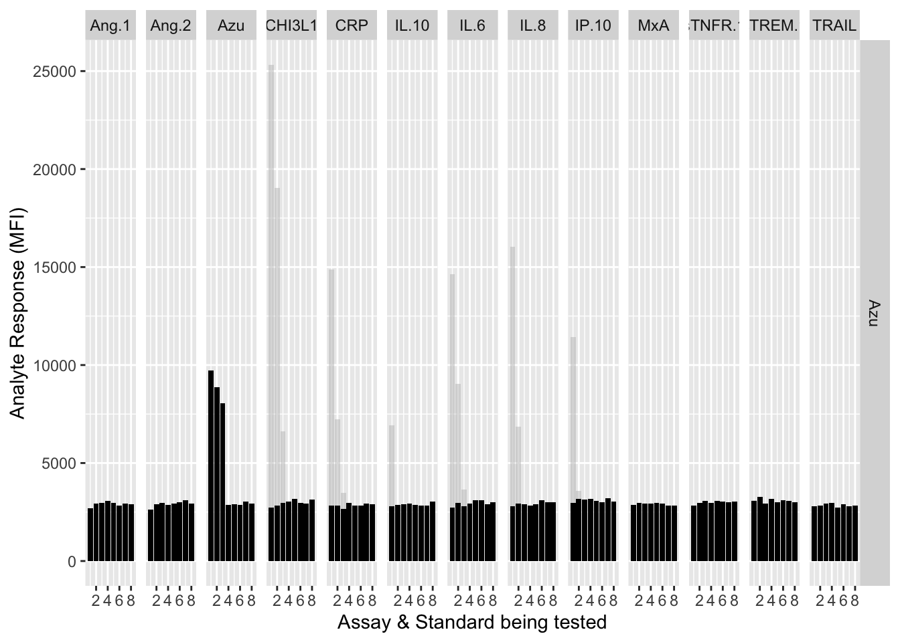

| Location | analyte | mfi | plate | assay | well | row | rep | standard |
|---|---|---|---|---|---|---|---|---|
| 1(1,A1) | Ang.1 | 6665.5 | 1 | 13plex | 1 | A | 1 | 1 |
| 2(1,B1) | Ang.1 | 2104.0 | 1 | 13plex | 2 | B | 1 | 2 |
| 3(1,C1) | Ang.1 | 489.5 | 1 | 13plex | 3 | C | 1 | 3 |
| 4(1,D1) | Ang.1 | 168.0 | 1 | 13plex | 4 | D | 1 | 4 |
| 5(1,E1) | Ang.1 | 83.0 | 1 | 13plex | 5 | E | 1 | 5 |
| 6(1,F1) | Ang.1 | 78.5 | 1 | 13plex | 6 | F | 1 | 6 |
| 7(1,G1) | Ang.1 | 75.0 | 1 | 13plex | 7 | G | 1 | 7 |
| 8(1,H1) | Ang.1 | 71.5 | 1 | 13plex | 8 | H | 1 | 8 |
| 9(1,A2) | Ang.1 | 7102.0 | 1 | 13plex | 9 | A | 2 | 1 |
| 10(1,B2) | Ang.1 | 2283.0 | 1 | 13plex | 10 | B | 2 | 2 |
| 11(1,C2) | Ang.1 | 487.0 | 1 | 13plex | 11 | C | 2 | 3 |
| 12(1,D2) | Ang.1 | 156.5 | 1 | 13plex | 12 | D | 2 | 4 |
| 13(1,E2) | Ang.1 | 87.0 | 1 | 13plex | 13 | E | 2 | 5 |
| 14(1,F2) | Ang.1 | 72.0 | 1 | 13plex | 14 | F | 2 | 6 |
| 15(1,G2) | Ang.1 | 75.0 | 1 | 13plex | 15 | G | 2 | 7 |
| 16(1,H2) | Ang.1 | 68.0 | 1 | 13plex | 16 | H | 2 | 8 |
| 17(1,A3) | Ang.1 | 80.0 | 1 | CHI3L1 | 17 | A | 1 | 1 |
| 18(1,B3) | Ang.1 | 75.0 | 1 | CHI3L1 | 18 | B | 1 | 2 |
| 19(1,C3) | Ang.1 | 71.0 | 1 | CHI3L1 | 19 | C | 1 | 3 |
| 20(1,D3) | Ang.1 | 74.0 | 1 | CHI3L1 | 20 | D | 1 | 4 |
| 21(1,E3) | Ang.1 | 75.0 | 1 | CHI3L1 | 21 | E | 1 | 5 |
| 22(1,F3) | Ang.1 | 70.0 | 1 | CHI3L1 | 22 | F | 1 | 6 |
| 23(1,G3) | Ang.1 | 70.0 | 1 | CHI3L1 | 23 | G | 1 | 7 |
| 24(1,H3) | Ang.1 | 69.0 | 1 | CHI3L1 | 24 | H | 1 | 8 |
| 25(1,A4) | Ang.1 | 74.0 | 1 | CHI3L1 | 25 | A | 2 | 1 |
| 26(1,B4) | Ang.1 | 70.0 | 1 | CHI3L1 | 26 | B | 2 | 2 |
| 27(1,C4) | Ang.1 | 71.5 | 1 | CHI3L1 | 27 | C | 2 | 3 |
| 28(1,D4) | Ang.1 | 68.0 | 1 | CHI3L1 | 28 | D | 2 | 4 |
| 29(1,E4) | Ang.1 | 69.0 | 1 | CHI3L1 | 29 | E | 2 | 5 |
| 30(1,F4) | Ang.1 | 78.5 | 1 | CHI3L1 | 30 | F | 2 | 6 |
| 31(1,G4) | Ang.1 | 70.0 | 1 | CHI3L1 | 31 | G | 2 | 7 |
| 32(1,H4) | Ang.1 | 72.0 | 1 | CHI3L1 | 32 | H | 2 | 8 |
| 33(1,A5) | Ang.1 | 69.0 | 1 | IL.8 | 33 | A | 1 | 1 |
| 34(1,B5) | Ang.1 | 65.0 | 1 | IL.8 | 34 | B | 1 | 2 |
| 35(1,C5) | Ang.1 | 64.0 | 1 | IL.8 | 35 | C | 1 | 3 |
| 36(1,D5) | Ang.1 | 66.0 | 1 | IL.8 | 36 | D | 1 | 4 |
| 37(1,E5) | Ang.1 | 66.5 | 1 | IL.8 | 37 | E | 1 | 5 |
| 38(1,F5) | Ang.1 | 65.0 | 1 | IL.8 | 38 | F | 1 | 6 |
| 39(1,G5) | Ang.1 | 63.5 | 1 | IL.8 | 39 | G | 1 | 7 |
| 40(1,H5) | Ang.1 | 76.0 | 1 | IL.8 | 40 | H | 1 | 8 |
| 41(1,A6) | Ang.1 | 61.0 | 1 | IL.8 | 41 | A | 2 | 1 |
| 42(1,B6) | Ang.1 | 75.0 | 1 | IL.8 | 42 | B | 2 | 2 |
| 43(1,C6) | Ang.1 | 71.0 | 1 | IL.8 | 43 | C | 2 | 3 |
| 44(1,D6) | Ang.1 | 70.0 | 1 | IL.8 | 44 | D | 2 | 4 |
| 45(1,E6) | Ang.1 | 66.0 | 1 | IL.8 | 45 | E | 2 | 5 |
| 46(1,F6) | Ang.1 | 71.0 | 1 | IL.8 | 46 | F | 2 | 6 |
| 47(1,G6) | Ang.1 | 77.0 | 1 | IL.8 | 47 | G | 2 | 7 |
| 48(1,H6) | Ang.1 | 70.0 | 1 | IL.8 | 48 | H | 2 | 8 |
| 49(1,A7) | Ang.1 | 69.0 | 1 | sTNFR.1 | 49 | A | 1 | 1 |
| 50(1,B7) | Ang.1 | 68.0 | 1 | sTNFR.1 | 50 | B | 1 | 2 |
9 Cross-reactivity Testing
9.1 Intro
Cross-reactivity would occur if an analyte triggered a measurable response in an assay other than that which was intended, for instance if an assay based on detection antibodies intended to be specific for MxA were reactive to purified sTNFR1 antigen. Cross-reactive antibody pairs cannot be trusted to provide specific and accurate estimates of analyte concentration.
To establish whether any assays were cross-reactive, we tested each assay against a standard curve of purified antigens for both its target analyte (which should be reactive) and all other analytes. Note that this approach cannot rule out assay cross-reactivity to analytes in the blood (or other sample) that were not directly tested here.
The data presented here include 13 antigens; those on the final 12-plex list of markers, plus C-Reactive Protein (CRP), which was part of our initial screening process.
9.2 Protocol
The protocol is initiated by making 13X stocks of the pure recombinant protein standards (13X because it was done as a 13-plex). Equal volumes of the 13X analytes were then mixed to achieve a multi-analyte pool in which each of the 13 analytes were at 1X concentrations. Separately, each 13X antigen was diluted 1 in 13 to achieve a 1X concentration standard curve of that antigen alone. This was so that each standard curve, either multi- or single-plex, originated from the same dilutions series, thus minimising variability.
The cross-reactivity assessment can be conducted for any level of multiplex (N-plex) by generating initial protiein standards at N times the 1X concentrations. This cross-reactivity assessment should be repeated if any changes are made to the antibodies or antigens in the assay i.e. if an additional assay were to be added to the multiplex, or a specific antibody or recombinant antigen replaced with another.
9.2.1 Preparation needed prior to running the Cross-Reactivity protocol
Prepare buffers for general assay procedures as per the Buffers and Reagents protocol.
Prepare recombinant protein antigen stock aliquots as per the Antigens protocol.
Prepare coupled beads as per the Bead_Coupling and Coupling_Confirmation protocols.
Prepare biotin detection antibodies as per the Detection_Antibody_Prep protocol.
9.2.2 Prepare analytes
⌚ Timing: 1-2 hours set-up, 2 hr + 1 hr + 45 min incubations. Total approx. 6h.
All incubations are at ambient temperature.
Tip: Handle recombinant proteins on ice at all times to minimise degradation.
NOTE: All 13 antibody-coupled beads and all 13 biotin-conjugated detection antibodies are present in all assays.
Get coupled beads from fridge, bring to ambient temperature, vortex and sonicate for 30 sec of each.
Put aliquots of the recombinant protein stocks on ice to thaw.
In a protein lo-bind 96-well plate, prepare 4-fold analyte dilutions of each antigen separately (i.e. one column per antigen) in PBS-TBN at 13X the final required concentration. Label the plate to know which order the antigens are in. Some analytes may need an initial pre-dilution in a separate tube.
e.g. make 100 ul of dilution 1 in row 1, then serially transfer 25 ul into subsequent wells with 75 ul of PBS-TBN, pipetting up and down to mix well between transfers. The Standards Calculator Excel document can also be adjusted for the number of analytes in the multiplex and for the final volume needed.
In a second lo-bind plate- for the multiplex standards (‘13-plex’), combine equal volumes (e.g. 10 ul) of each of the 13X analyte stocks. i.e. 10 ul of each standard 1 will be transferred into well A1 to make 130 ul total, 10 ul of each standard 2 into well A2, etc. Again mixing well by pipetting up and down carefully several times.
Into subsequent columns of the second lo-bind plate, add 120 ul of PBS-TBN and transfer 10 ul of each 13X standard to achieve 1X standards of each antigen, pipetting up and down to mix well.
9.2.3 Prepare beads
Prepare beads for a total of 208 wells, plus additional surplus, in Plates 1,2,3. The aim is to get 20,000 beads/ml [ie 1000 beads/well] based on stock of 7.5x106 beads/ml:
Add 11.044 ml of PBS-TBN to a Universal (20 ml capacity tube) i.e. 11,440 ul final wanted volume - (30.5 ul of 13 bead regions = 396.5 ul total bead volume) = 11,043.5 ul. Total final volume after addition of beads, will be 11.44 ml which allows 10% surplus volume.
Vortex bead stocks again as you add 30.5 ul of each bead to the tube.
Get black mylar plates (“assay plates”) and label with date etc.
Add 50 ul of diluted beads to all 96 wells of 2 plates, plus columns 01 and 02 of a third plate.
Wash beads once: put plates on magent for 60 sec, discard liquid, remove form magent to add 100 ul PBST, replace on magent for 60 sec, discard liquid, dab gently on tissue to remove excess liquid. Cover plates until addition of antigens to prevent drying.
Transfer the multiplex and single-plex standards to the assay plates into duplicate wells of 30 ul each, as per the plate layouts below.
Cover and incubate the plates on a shaker at ~200 rpm for 2 hours.
Tables. Plate layouts for cross-reactivity assessment assay. Each well will contain all capture antibodies (beads) and all detection antibodies, but either all antigens (13-plex) or each antigen alone (where named).
| Plate 1 | 13-plex | CHI3L1 | IL-8 | sTNFR1 | IL-6 | Ang-2 |
|---|---|---|---|---|---|---|
| Columns | 01-02 | 03-04 | 05-06 | 07-08 | 09-10 | 11-12 |
| Row A | ||||||
| Row B | ||||||
| Row C | ||||||
| Row D | ||||||
| Row E | ||||||
| Row F | ||||||
| Row G | ||||||
| Row H |
| Plate 2 | Ang-1 | Azu | MxA | TRAIL | IL-10 | IP-10 |
|---|---|---|---|---|---|---|
| Columns | 01-02 | 03-04 | 05-06 | 07-08 | 09-10 | 11-12 |
| Row A | ||||||
| Row B | ||||||
| Row C | ||||||
| Row D | ||||||
| Row E | ||||||
| Row F | ||||||
| Row G | ||||||
| Row H |
| Plate 3 | sTREM1 | EMPTY | EMPTY | EMPTY | EMPTY | EMPTY |
|---|---|---|---|---|---|---|
| Columns | 01-02 | 03-04 | 05-06 | 07-08 | 09-10 | 11-12 |
| Row A | ||||||
| Row B | ||||||
| Row C | ||||||
| Row D | ||||||
| Row E | ||||||
| Row F | ||||||
| Row G | ||||||
| Row H |
12. During the incubation, prepare biotin detection antibodies for 3 plates. The excess can be stored frozen for future use.
- Wash the plates 3 times with PBST as before.
- Add 30 ul per well of detection antibodies to all wells.
- Cover and inclubate, shaking, for 1 hour.
- During incubation, prepare SA-PE at 3 ug/ml for a total of 6.9 ml in PBS-TBN.
- Wash plates 3 times with PBST as before.
- Add 30 ul per well of the diluted SA-PE to all wells.
- Wash plates 3 times with PBST as before.
- Add 100 ul PBS-TBN to each well, cover and refrigerate overnight.
- Read plates on Mag-Pix first thing the next day.
Example data analysis using real data is given below.
9.3 Results & Analysis
The raw data are in long format in the file data/crossreactivity_data/crossreactivity_data_long.csv
Each line represents a well of the Luminex plate in which there was…
An analyte at one of 8 concentrations
Detection antibodies for one of the 13 individual assays
9.3.1 Load libraries
9.3.2 Read in the data from the crossreactivity experiments.
9.3.3 Create counterfactuals and bind to data
The counterfactuals are used in the charts below to show the response curves when the assay is tested against its own analyte. These are shown as grey bars in the charts.
counterfactuals = filter(mfi_allplates,assay==analyte) %>%
select(
assay,
standard,
rep,
mfi
) %>%
rename(mfi.cf = mfi)
mfi_allplates <- left_join(mfi_allplates,counterfactuals)9.3.4 Show results for individual analytes against all assays
Each experiment was repeated and charts below show the results of experiments 1 & 2.
Define a function to plot each analyte.
assay.plot<-function(showanalyte){
ggplot(filter(mfi_allplates,analyte==showanalyte,assay!="13plex"))+
geom_bar(stat = "identity",aes(standard,mfi.cf),fill="grey",alpha=0.5)+
geom_bar(stat = "identity",aes(standard,mfi),fill="black")+
facet_grid(analyte~assay) +
xlab("Assay & Standard being tested") +
ylab("Analyte Response (MFI)")
}9.3.4.1 Ang-1
assay.plot(showanalyte = "Ang.1")9.3.4.2 Ang-2
assay.plot(showanalyte = "Ang.2")9.3.4.3 Azu
assay.plot(showanalyte = "Azu")
9.3.4.4 CHI3L1
assay.plot(showanalyte = "CHI3L1")9.3.4.5 CRP
assay.plot(showanalyte = "CRP")9.3.4.6 IL-10
assay.plot(showanalyte = "IL.10")9.3.4.7 IL-6
assay.plot(showanalyte = "IL.6")9.3.4.8 IL-8
assay.plot(showanalyte = "IL.8")9.3.4.9 IP-10
assay.plot(showanalyte = "IP.10")9.3.4.10 MxA
assay.plot(showanalyte = "MxA")9.3.4.11 sTNF-R1
assay.plot(showanalyte = "sTNFR.1")9.3.4.12 sTREM-1
assay.plot(showanalyte = "sTREM.1")9.3.4.13 TRAIL
assay.plot(showanalyte = "TRAIL")9.3.4.14 Show 13-plex results
library(ggplot2)
library(dplyr)
library(readr)
# Load the data
mfi_allplates = read_csv("data/crossreactivity_data/crossreactivity_data_long.csv", show_col_types = FALSE)
# Create the plot with rotated facet labels and reduced y-axis ticks
ggplot(filter(mfi_allplates, assay != "13plex")) +
geom_bar(stat = "identity", aes(standard, mfi), fill = "black") +
facet_grid(analyte ~ assay,scales = "free_y") +
xlab("Assay & Standard being tested") +
ylab("Analyte Response (MFI)") +
theme(
strip.text.x = element_text(angle = 90, hjust = 0),
strip.text.y = element_text(angle = 0)
)